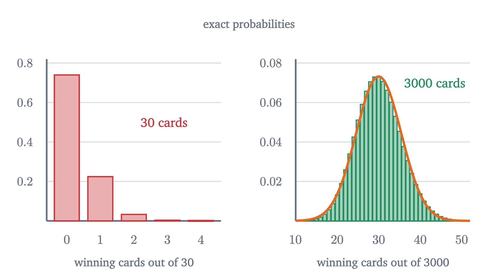
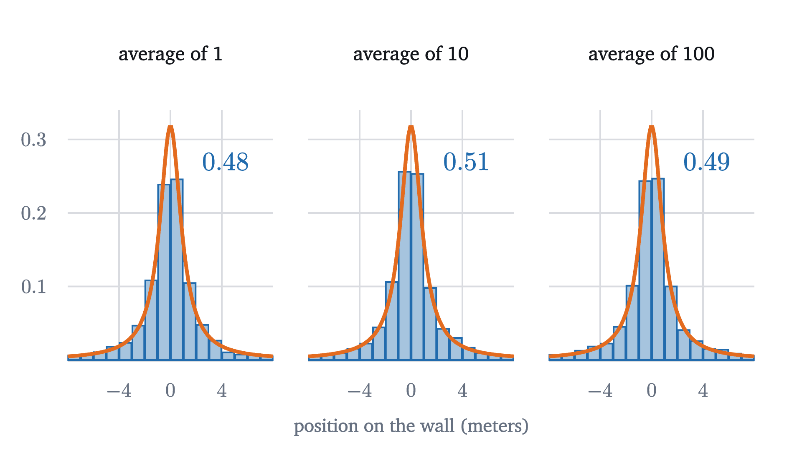

The central limit theorem: why bell curves are everywhere
One die is flat, but the average of 30 dice follows a bell curve. The central limit theorem says when this happens, how fast, and when it fails.
AssumesThe normal distribution and the 68-95-99.7 ruleExpected value and the surprising power of adding averages
Roll one fair die many times and draw a histogram of the results. It is flat: each face comes up about a sixth of the time, and there is no hump anywhere. Now roll thirty dice at a time and record their average. The histogram of those averages is a bell curve, and a very good one.
Nothing bell-shaped went into the experiment. The die has no preference for the middle, and the instructions were to add and divide. The normal curve of the last lesson, with its $e^{-z^2/2}$ and its $\sqrt{2\pi}$, appeared from a cube with dots on it.
The same thing happens if the die is replaced by almost any other source of random numbers, and that fact is the central limit theorem. It is the reason heights, measurement errors and exam totals look normal: each is a sum of many small independent contributions. This lesson shows the theorem happening, states it exactly, says why its proof is out of reach here, and then finds a case where it fails.
Two dice, counted by hand
Start with the smallest case that is not flat. Roll two dice and take their average. There are 36 equally likely outcomes, as in the lesson on sample spaces, and the average depends only on the total.
Pause and try
Of the 36 outcomes for two dice, how many give an average of exactly 1? How many give 3.5? Predict the shape of the whole histogram of the average.
Show answerHide answer
An average of 1 needs both dice to show 1, which is one outcome. An average of 3.5 is a total of 7, which happens six ways: (1,6), (2,5), (3,4), (4,3), (5,2), (6,1). The counts rise by one for each step from a total of 2 up to 7 and fall by one from there to 12, so the histogram is a triangle peaked at 3.5.
The reason for the peak is a counting reason. A middling average can be reached in many ways, because a low die can be offset by a high one. An extreme average can be reached in only one way, because every die has to cooperate. With three dice the effect compounds: a total of 3 still needs one specific outcome out of 216, while a total of 10 can be made in 27 ways. The corners of the triangle are rounded off, and with each added die the histogram looks more like a bell, as the figure at the top shows.
Two things happen at once in that figure, and it helps to separate them. The histogram gets narrower, and its shape changes. The narrowing is the law of large numbers: averages of many rolls crowd around 3.5. The amount of narrowing is known exactly. One roll has mean $\mu = 3.5$ and standard deviation $\sigma = \sqrt{35/12} \approx 1.71$, and the average of $n$ independent rolls has mean $\mu$ and standard deviation $\sigma/\sqrt{n}$. (This is proved in the next lesson; here I only use it.) For 30 dice that is $1.71/\sqrt{30} \approx 0.31$, and the simulation’s 10,000 averages had standard deviation 0.31.
Removing the narrowing to see the shape
To study the shape alone, we must stop the histogram from shrinking, and the last lesson supplied the tool: convert to z-scores. Subtract the mean and divide by the standard deviation, using the standard deviation of the average, which is $\sigma/\sqrt n$:
Here $\bar X_n$ is the average of the $n$ rolls. $Z_n$ is called the standardized mean. Whatever $n$ is, $Z_n$ has mean 0 and standard deviation 1, so its histogram can neither drift nor shrink. Only its shape is free to change.
On this scale the convergence is plain. One die gives six equal bars, which is nothing like the curve. Two give a triangle. By ten dice the tops of the bars trace the standard normal density closely, and by thirty the fit is hard to fault.
Does it depend on the die?
A die is symmetric, and a bell is symmetric, so perhaps the die was a friendly choice. A harder test is a source that is badly lopsided.
The last lesson ended with one: waiting times for a bus that comes at random moments, with mean 5 minutes and standard deviation 5 minutes (the exponential distribution). Short waits are the most common and long waits trail far to the right. The normal curve was a poor description of those waits.
Pause and try
Suppose you record your wait every morning for 30 mornings and compute the average. Over many such months, what will the histogram of the monthly average look like? Will it keep the long right tail of the single waits? What will its standard deviation be?
Show answerHide answer
Its standard deviation will be $5/\sqrt{30} \approx 0.91$ minutes, by the same $\sigma/\sqrt{n}$ rule. Its shape will be close to a bell centered at 5, as the next figure shows. A little of the right tail survives at $n = 30$, which a later example measures.
The lopsidedness is averaged away. It takes longer than it did for the die: at $n = 5$ the histogram still leans visibly, and at $n = 30$ only a trace is left. But the destination is the same curve, and the die and the bus have nothing in common except that each has a mean and a standard deviation.
The theorem
Each clause corresponds to something in the experiments.
Independent means that knowing some of the values tells you nothing about the others, as with separate rolls. The same distribution means every roll uses the same die. Statisticians abbreviate the pair as i.i.d., independent and identically distributed.
Finite variance is a real restriction. The die and the bus both satisfy it. The last section of this lesson shows what happens without it.
The conclusion is about $Z_n$, the standardized mean. It does not say that $\bar X_n$ itself has a limiting bell shape: $\bar X_n$ piles up at the single point $\mu$. Only after magnifying the deviations $\bar X_n - \mu$ by the factor $\sqrt n/\sigma$ does a fixed shape appear.
The limit is a statement about probabilities of ranges, which are areas under the standard normal density $\varphi$. It says that the area of the histogram of $Z_n$ over any interval approaches the area under $\varphi$ over the same interval. That is what the two videos showed.
Notice what is absent from the right-hand side: any trace of the distribution we started from. Faces of a die, minutes of waiting, anything else with a finite variance, all lead to the same $\varphi$.
What we can prove, and what we cannot
Part of the statement is within reach. The claim that $Z_n$ has mean 0 and standard deviation 1 for every $n$ follows from two facts about expected values and variances. The first is linearity, $E[aX + b] = aE[X] + b$ and $E[X + Y] = E[X] + E[Y]$, from the lesson on expected value. The second is that variances of independent variables add, $\operatorname{Var}(X + Y) = \operatorname{Var}(X) + \operatorname{Var}(Y)$, together with $\operatorname{Var}(aX + b) = a^2\operatorname{Var}(X)$; the next lesson proves it.
So standardizing pins down the center and the width. The content of the central limit theorem is what remains: the shape converges to the normal one. I cannot prove that here, and it is better to say why than to wave at it.
The standard proof attaches to each distribution a function called its characteristic function (a Fourier transform), which has two properties. Adding independent random variables multiplies their characteristic functions, so the one for a sum of $n$ copies is an $n$th power. And two distributions with nearly equal characteristic functions assign nearly equal probabilities to intervals (Lévy’s continuity theorem). The proof computes that the characteristic function of $Z_n$ is $\bigl(1 - \frac{t^2}{2n} + \text{smaller terms}\bigr)^n$, where only the mean and variance enter the terms shown. As $n$ grows this tends to $e^{-t^2/2}$, by the same limit that defines $e$, and $e^{-t^2/2}$ is the characteristic function of the standard normal. Each of those steps takes real analysis to justify. The theorem in this form is due to Lindeberg and Lévy in the 1920s; special cases for coins go back to de Moivre in 1733.
The theorem as stated gives no error estimate for a particular $n$. A companion result, the Berry–Esseen theorem, does: when $E[|X - \mu|^3]$ is finite, the error in $P(Z_n \le b)$ is at most a constant times $\frac{E[|X - \mu|^3]}{\sigma^3\sqrt n}$. Two consequences are worth remembering. The error shrinks like $1/\sqrt n$, which is slow. And it is larger for distributions that put weight far from the mean, relative to $\sigma$, which is why the bus needed more terms than the die.
Worked examples
How large is large enough?
Textbooks often say that $n \ge 30$ is enough for the central limit theorem. For sources like dice it is more than enough. But the theorem has no such threshold in it, and for a sufficiently lopsided source 30 is nowhere near enough.
Consider a scratch card that pays $100 with probability 0.01 and nothing otherwise. A card’s payout has mean $1 and standard deviation $\sqrt{0.01 \times 100^2 - 1^2} \approx \$9.95$: finite, so the theorem applies.
Pause and try
You buy 30 of these cards. What values can your average payout per card take, and what is the probability that it is exactly 0?
Show answerHide answer
The total is $100 times the number of winning cards, so the average is $0$, $3.33$, $6.67$ and so on in steps of $100/30$. It is 0 when all 30 cards lose, with probability $0.99^{30} \approx 0.74$. Three quarters of the time the average is 0, which is nothing like a bell centered at 1.

The theorem is true for the scratch card, and its promise is kept eventually: with 3000 cards the number of winners is close to normal. How large $n$ must be depends on how lopsided the source is.
A case where the theorem fails
Every hypothesis in a theorem should be tested by removing it. Here is what happens without a finite variance.
Stand one meter from a long wall, holding a flashlight. Spin around and stop at a random angle, facing the wall, so that the beam’s angle from the perpendicular is equally likely to be anything between $-90°$ and $90°$. Record the position $x$ where the beam hits the wall, in meters from the nearest point: $x = \tan(\text{angle})$. Most spins land within a meter or two. But angles near $\pm 90°$ send the beam almost parallel to the wall, and it lands enormously far away. The distribution of $x$ is called the Cauchy distribution, and its density is $\frac{1}{\pi(1 + x^2)}$.
Pause and try
Average the positions of 100 spins. Will the average be more tightly concentrated near 0 than a single spin is?
Show answerHide answer
For every distribution with a finite variance, yes: the spread of the average shrinks like $1/\sqrt n$. For this one, no. The next figure shows that the average of 100 spins has the same distribution as one spin.

This is a theorem, provable with the same characteristic functions: the average of $n$ independent Cauchy variables has exactly the Cauchy distribution, for every $n$. Averaging a hundred spins tells you no more than one spin does. The reason is that the rare enormous values are enormous enough to matter. A single spin near $90°$ can exceed the sum of all the others, and dividing by $n$ does not tame it.
The hypothesis that fails is the finite variance. The Cauchy distribution has no variance, and in fact no mean. The mean would be $\int x \cdot \frac{1}{\pi(1 + x^2)}\,dx$ over the whole line, and already the right half of that integral is infinite: the area under $\frac{x}{\pi(1+x^2)}$ from 0 to $R$ is $\frac{1}{2\pi}\ln(1 + R^2)$, which grows without bound as $R$ does. (You can check the antiderivative by differentiating.) With no $\mu$ and no $\sigma$ there is nothing to standardize by, and neither the central limit theorem nor the law of large numbers applies.
The Cauchy case is extreme, but heavy tails are common in practice: insurance losses, city sizes, fluctuations of markets. When a quantity is dominated by rare huge values, averages behave badly and normal approximations are untrustworthy. The theorem’s other hypothesis matters too. If the values are strongly dependent, as when one measurement is copied $n$ times, the average is no better than a single value.
Stepping back
The surprising thing at the start was that a bell appeared from a die. The explanation has two layers. The elementary layer is counting: middling totals can be reached in many more ways than extreme ones. The deep layer is the theorem: after standardizing, the distribution of a sum of i.i.d. terms with finite variance converges to one universal shape, and it forgets everything about the terms except their mean and variance. We verified the mean and variance of $Z_n$, watched the convergence for a symmetric and a lopsided source, and cited the proof.
The practical use is the one in the worked examples: to find the probability that an average or a total lands in some range, compute its mean and standard deviation, convert to z-scores, and use normal areas, keeping in mind that the answer is an approximation whose quality depends on $n$ and on the tails. The next lesson applies this to the question of how a sample of a thousand people can speak for a country.
Check yourself
Individual waiting times at a clinic are strongly skewed to the right, with mean 20 minutes and standard deviation 20 minutes. Which statement does the central limit theorem support?
Problems
The first three use the theorem to compute. The next three are about its meaning and its hypotheses. The last two ask for exact calculations to compare with it.
Problem 1
For two dice, use the grid of 36 outcomes to find the probability that the average is (a) exactly 3.5, (b) at least 5.
Show solutionHide solution
(a) A total of 7: six outcomes, so $\frac{6}{36} = \frac16$. (b) A total of at least 10. Totals of 10, 11 and 12 occur in 3, 2 and 1 ways, so the probability is $\frac{6}{36} = \frac16$.
Problem 2
Fifty dice are rolled and their average is 3.9. Find the standard deviation of the average of fifty dice and the z-score of this result. Is it unusual?
Show solutionHide solution
The standard deviation of the average is $\frac{1.708}{\sqrt{50}} \approx 0.2415$. The z-score is $\frac{3.9 - 3.5}{0.2415} \approx 1.66$. By the central limit theorem the average is approximately normal, so a result this high or higher has probability between the one-sided tail areas for $z = 1$ and $z = 2$, that is, between 0.16 and 0.023. (A table gives about 0.05.) It is somewhat unusual and far from impossible.
Problem 3
An elevator is rated for 1900 kg. Twenty-five people get in. Suppose their weights are independent with mean 70 kg and standard deviation 15 kg. Estimate the probability that the total exceeds the rating. Which assumption would you question?
Show solutionHide solution
The total has mean $25 \times 70 = 1750$ kg and standard deviation $15\sqrt{25} = 75$ kg. The rating is $\frac{1900 - 1750}{75} = 2$ standard deviations above the mean, so by the normal approximation the probability is about $\frac{1 - 0.9545}{2} \approx 0.023$. Independence is the doubtful assumption: if the 25 people are a rugby team, or a group of children, their weights are not independent draws from the general population, and the total’s standard deviation of 75 kg is the wrong number.
Problem 4
How many dice must be averaged for the standard deviation of the average to be at most 0.1? What does this say about the cost of precision?
Show solutionHide solution
We need $\frac{1.708}{\sqrt n} \le 0.1$, so $\sqrt n \ge 17.08$ and $n \ge 291.7$: at least 292 dice. Thirty dice give a standard deviation of 0.31; cutting that by a factor of about 3 costs about 9 to 10 times as many dice, because the spread falls only like $1/\sqrt n$.
Problem 5
The heights of adult men are close to normal, but their incomes are far from it. Give an explanation of the difference in terms of the central limit theorem.
Show solutionHide solution
Height is plausibly the sum of a great many small, roughly independent contributions: many genes of small effect, nutrition at many stages, and so on. The theorem then predicts an approximately normal total. Income is not built by adding small independent amounts. Raises and returns on investment act as percentages, so effects multiply, and a few very large incomes carry a large share of the total. A product of many factors or a quantity dominated by rare large values has no reason to be normal. (The logarithm of a product is a sum, so the logarithm of income is closer to normal than income is.)
Problem 6
For each situation, say which hypothesis of the central limit theorem fails and what happens to the average of $n$ values. (a) A single die is rolled once and the result is written down $n$ times. (b) Every value equals 7. (c) The values are independent flashlight positions.
Show solutionHide solution
(a) Independence fails. The average equals the single roll, so its distribution is flat on 1 to 6 for every $n$ and never narrows. (b) The variance is zero, and the theorem requires $\sigma^2 > 0$. The average is always 7, and $Z_n$ would be $\frac00$, undefined. (c) The variance is not finite, and neither is the mean. The average has the same Cauchy distribution as a single value.
Problem 7
Three dice are rolled. (a) Show that a total of 10 can occur in 27 ways, and find its exact probability. (b) The total has mean 10.5 and standard deviation $\sqrt{3 \cdot 35/12} \approx 2.958$. The normal approximation to the probability of a total of exactly 10 is the area of a strip one unit wide, about $1 \times f(10)$, where $f$ is the normal density with that mean and standard deviation. Compute it, using $\varphi(0.169) \approx 0.3933$, and compare.
Show solutionHide solution
(a) List the totals by the first die. If it shows $a$, the other two must total $10 - a$, and the number of ways for two dice to total $t$ is $6 - |t - 7|$ for $2 \le t \le 12$. For $a = 1, \dots, 6$ the other two must total $9, 8, 7, 6, 5, 4$, in $4, 5, 6, 5, 4, 3$ ways: 27 in all. The probability is $\frac{27}{216} = 0.125$. (b) The z-score of 10 is $\frac{10 - 10.5}{2.958} \approx -0.169$, and $f(10) = \frac{1}{2.958}\varphi(-0.169) = \frac{0.3933}{2.958} \approx 0.133$. The approximation 0.133 is within 0.008 of the exact 0.125, with only three dice.
Problem 8
Two numbers $U$ and $V$ are chosen independently and uniformly at random from the interval $[0, 1]$, so that the point $(U, V)$ is uniformly distributed over the unit square and probabilities are areas. (a) Find $P\bigl(\frac{U + V}{2} \le \frac14\bigr)$. (b) Find $P\bigl(\frac{U+V}{2} \le t\bigr)$ for $0 \le t \le \frac12$. (c) Compare (a) with the probability that a single uniform number is at most $\frac14$, and explain the difference.
Show solutionHide solution
(a) The condition is $U + V \le \frac12$. In the unit square this is the triangle with corners $(0,0)$, $(\frac12, 0)$ and $(0, \frac12)$, whose area is $\frac12 \cdot \frac12 \cdot \frac12 = \frac18$. (b) The condition $U + V \le 2t$ with $2t \le 1$ cuts off a right triangle with legs $2t$, of area $\frac12(2t)^2 = 2t^2$. (c) A single uniform number is at most $\frac14$ with probability $\frac14$, twice as likely as the average of two. For the average to be small, both numbers must be small together, and the region where that happens is a small corner of the square. This is the two-dice triangle again in continuous form: the density of the average is the derivative of $2t^2$, which is $4t$, rising in a straight line toward the middle.